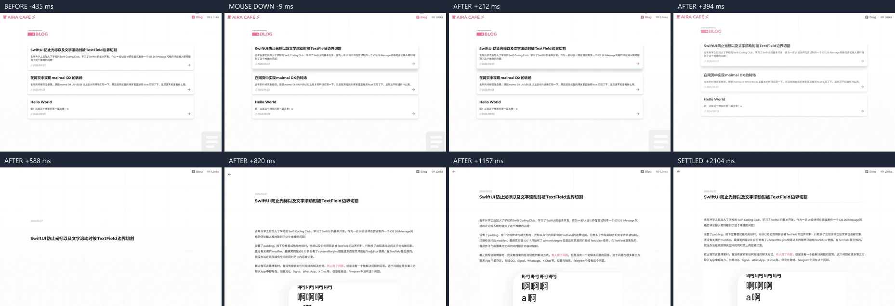
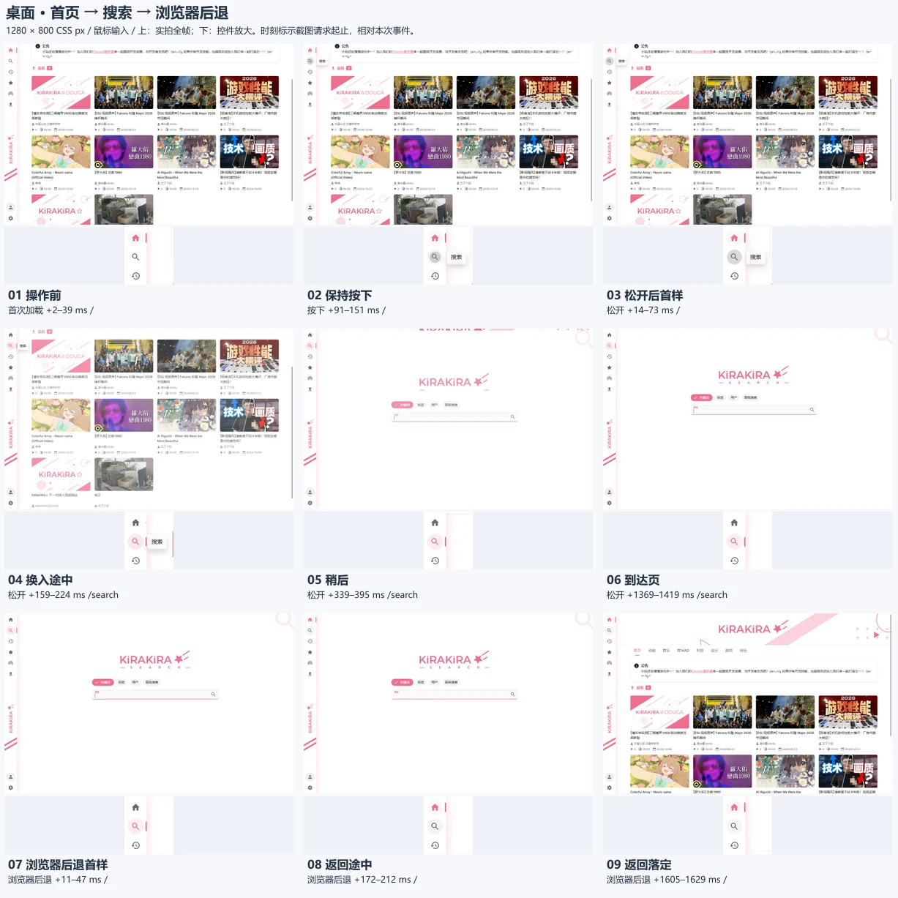
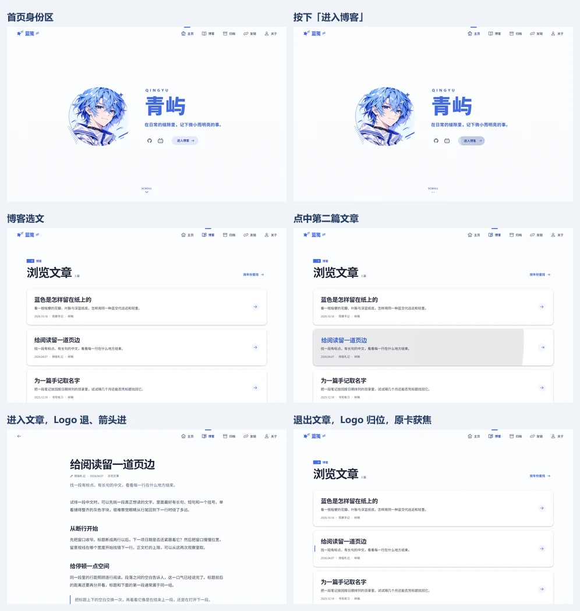
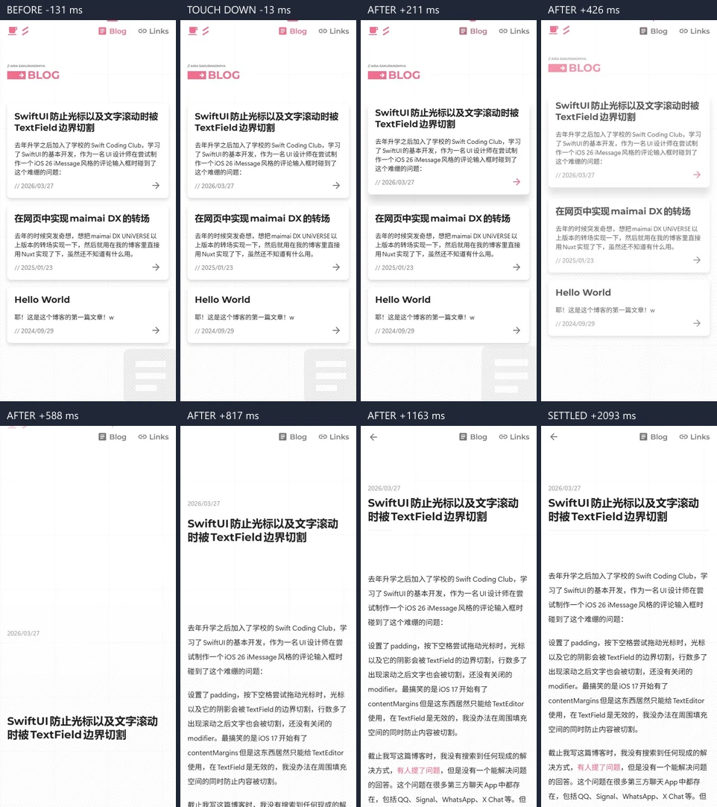
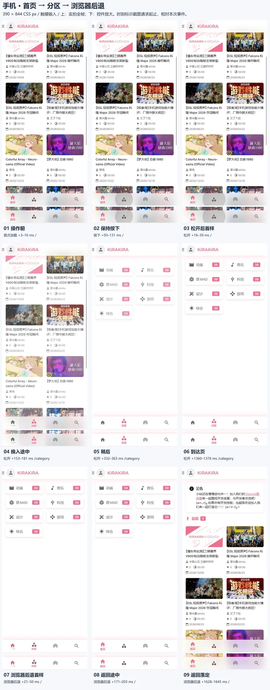
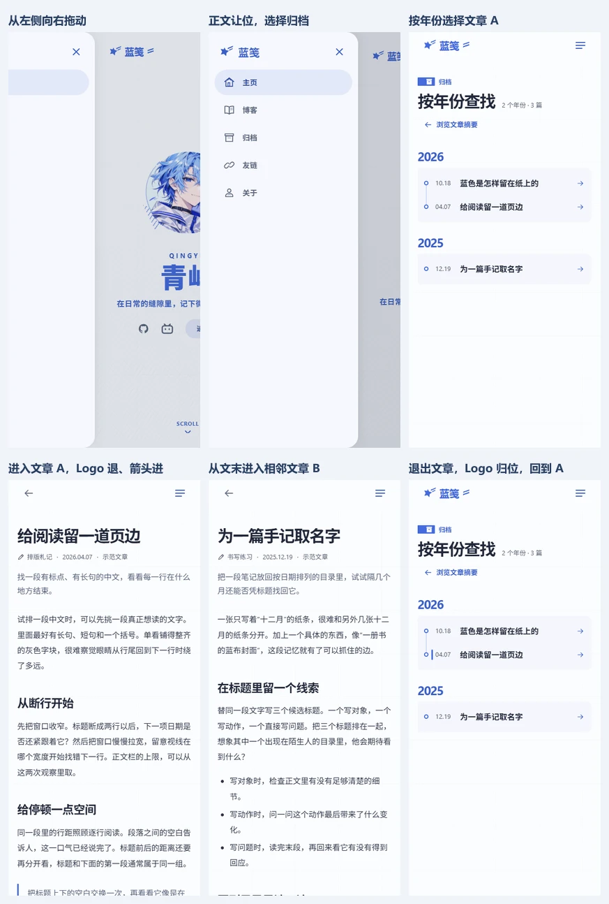

Aira Café
个人博客，从文章卡进入阅读。


放大 ↗观察第一张白卡、右下角箭头、进入后的新标题。
按住时，哪个控件先回应？松开后，旧内容何时离开，新标题落在哪里？三组画面记录个人博客、视频社区和本站各自的真实操作。点击图像可以放大。
个人博客，从文章卡进入阅读。

放大 ↗观察第一张白卡、右下角箭头、进入后的新标题。
社区网站，在导航或分类之间切换。

放大 ↗每格均有控件局部放大。观察导航图标、旧视频、搜索框及后退后的首页。
本站个人博客，从入口到列表与阅读页。

放大 ↗1280 × 800。首页左上角的 Logo 从首帧保持原位。由列表进入文章时，Logo 向上退，箭头从下方进入。点箭头返回时动作反向，焦点回到原卡。
| 时刻 | Aira Café | Kirakira | 蓝笺 |
|---|---|---|---|
| 按下 | 文章卡在悬停时已上移约 8px，右下箭头由灰转粉。按住时维持该状态。 | 按住左侧放大镜时有局部反馈，旁边出现“搜索”提示；首页保持可见。 | 移入博客文章卡时，卡面保持原色。按住后，均匀填色的半透明圆从触点扩开，到卡边被裁切。归档里按年份排列的文章行保留边缘渐淡的水波。 |
| 旧页退出 | 打开文章时，原列表向上移并淡去。进入友链时，右下角的栏目图号也在更换。 | 释放后约 160ms 的样本中，搜索项已选中，中间仍能看见首页视频。 | 旧列表先退，所选标题独立移动到正文标题的位置。页头的 Logo 同时向上退，箭头从下方进入。退出文章时，箭头向下退，Logo 从上方回位。 |
| 新页落定 | 新的文章标题从屏幕底部进入，在距顶约 155px 处停住。友链页则先见标题和面板，再见一项项头像。 | 约 340ms 的样本中出现搜索标志和输入框，旧横幅一角仍可见。稳定后输入框获得焦点。 | 所选标题连续移向文章标题的位置。读至文末再返回时，列表反向揭开，原行左缘出现短蓝线。 |
| 浏览器后退 | 从已滚动 240px 的正文回到列表顶部。进入文章前列表本来就在顶部，无法据此判断非零位置恢复。 | 从首页内部滚动 222px 的位置出发，后退后首页稳定在 0px。 | 列表鼠标点击、归档键盘进入及深滚至中文路径三组检查中，后退恢复滚动值和原行上沿。鼠标和触摸以短蓝线定位，键盘使用者同时看见焦点轮廓。 |
手机触摸进入文章，随后用历史记录后退。

放大 ↗按住时文章卡仍在原位。留意新标题从屏幕底部进入。
社区网站，从底部导航进入分区。

放大 ↗按住时首页仍选中。释放后分区名称、旧缩略图和新目录依次出现。
从左侧拉出导航，进入归档并连续阅读两篇文章。

放大 ↗390 × 844。从左边缘向右展开导航，正文跟手让位。从归档进入文章 A 时，Logo 退、箭头进。连读 B 时箭头保持原位。点箭头回归档时，Logo 回位，焦点回到 A 所在行。
| 时刻 | Aira Café | Kirakira | 蓝笺 |
|---|---|---|---|
| 按下 | 手指按住第一张卡时，其位置未移动，箭头仍是灰色。 | 按住底栏分区时，目标图标后有灰色水纹；原选中的首页仍带粉色和文字。 | 按住主导航，实心水波在导航项内扩散，SVG 图标与栏目文字各自回应。进入归档后，按年份排列的文章行显示渐变水波，页首「浏览文章摘要」显示实心水波。 |
| 旧页退出 | 释放后收起列表，旧内容整体向上并淡出。 | 释放后约 153ms 的样本中，底栏已选择分区，中间还可辨认旧视频缩略图。 | 点归档后，当页仍承载内容，目标图标和文字先回应。离开层与到达层沿同一边界交接，避免两份栏目标题压在一起。 |
| 新页落定 | 844px 高的视口中，文章标题从约 y=999px 进入，在 y=155px 左右稳定。 | 约 332ms 的样本已出现分区条目。顶部站标与底栏仍可见，新目录从顶部开始。 | 栏目标题和各年份组按顺序呈现。进入文章时，原卡片的标题承接到开放的阅读列；深读后返回，屏外标题留在屏外。 |
| 浏览器后退 | 844px 高的样本回到列表顶部。另用 620px 高度从非零位置打开第二篇再返回：列表恢复至 140px，原行上沿仍为 y=270px，DOM 焦点在 BODY。 | 从首页滚动 222px 处进入分区。浏览器后退后首页稳定在 0px，DOM 焦点仍指向分区链接。 | 390 × 650 的窄屏回归覆盖列表、归档及深滚中文路径。返回后原行高度、滚动值和链接焦点均恢复。详情的返回入口也会写明博客、归档或最近文章。 |
实测。 2026 年 11 月 25 日以 Chromium 采样。Aira 的四段路径在两端各走一遍，共记录 361 帧。Aira 和 Kirakira 桌面主样本为 1280 × 800，手机主样本为 390 × 844；Aira 另以 390 × 620 检查非零滚动恢复。本站另有 1120 × 720、390 × 650 的生产回归。手机样本使用移动视口和触摸输入。每张图保留各自的时间标记。帧与帧之间的准确换页时刻无法由截图确定。本站按压近景中的“变化像素”按任一 RGB 通道变化至少 12 计数。
本站另用 900 × 760 的桌面视口和鼠标，在三个入口宽度的 73%、高度的 55% 处按下。两种水波都从真实触点扩散，观察 45ms 的放大图可以分辨轮廓。打开三处按压实拍
源码对照。 Aira 的文章卡定义了悬停上移与箭头变色，页面退出样式定义向上位移与透明度变化。样式给出设计终值，采样中的时长还受资源载入和设备影响。
解读。 内容索引需要让读者重新找到原文，社区导航还要持续交代当前分区。适合本站的动效强度和阅读舒适度仍要由读者体验验证。这里没有取样实体手机、其他浏览器或读屏器。